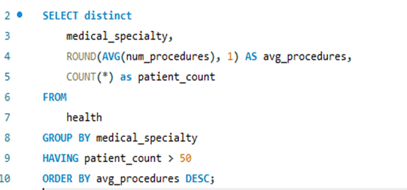
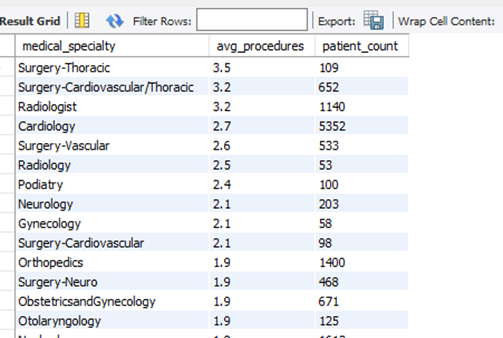
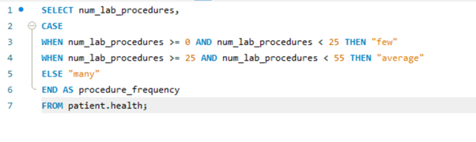
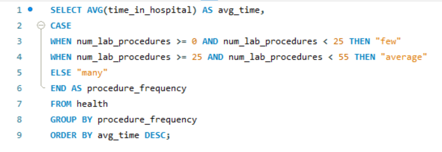
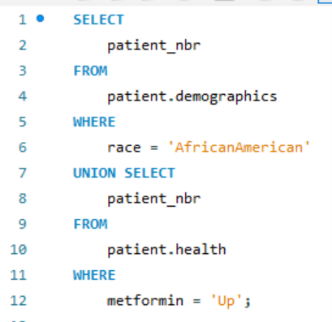
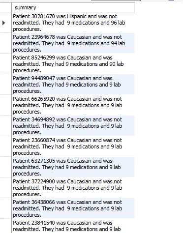

HOSPITAL BED CAPACITY OPTIMIZATION (SQL DIABETIC PATIENTS ANALYSIS)
Given the abundance of free healthcare facilities in Denmark, the administration is dedicated to ensuring satisfactory treatment for patients. While the hospitals boast a wealth of skilled medical professionals, contemporary health challenges pose difficulties in aligning available resources with the increasing demand for patient care. Assuming the role of a consultant hired by the hospital administration, my task is to address and resolve the issue of prolonged patient waiting times for admission..
The dataset
I initiated the analysis by requesting patient data, encompassing health and demographic tables. The dataset can be found here. The dataset is an extract of health data from 130 hospitals and clinics in the USA representing a ten-year period (1999-2008). It consists of 41 tables in a fact-dimension schema and 117 features. The data contains both outpatient and inpatient, as well as emergency patients. In other to extrapolate the USA data to the Danish health system, the initial data from the database had to satisfy the following conditions;- It is an inpatient encounter (a hospital admission).
- It is a “diabetic” encounter, that is, one during which any kind of diabetes was entered to the system as a diagnosis.
- The length of stay was at least 1 day and at most 14 days.
- Laboratory tests were performed during the encounter.
- Medications were administered during the encounter.
Analysis and findings
To proceed with the findings, I decided to frame some queries that will guide me in answering these questions.- How many days are patients staying in the hospital?
- Which medical specialties are performing the largest average number of procedures?
- Does ethnicity determine the number of lab procedures needed to treat patients?
- Do those with many lab procedures stay longer in the hospital?
- Were there patients admitted through the emergency department with a hospital stay less than the average duration?
Key Insights
To proceed with the findings, I decided to frame some queries that will guide me in answering these questions.- Patients stayed between 1-14 days. Most were between 1-4 days and most of them stayed for 3 days.
- The cardiology medical specialty has the highest patient count of 5352 with an average procedure of 2.7.
- Ethnicity has nothing to do with the number of lab procedures needed to treat a patient they were no significant difference between races.
- There is a correlation between average time spent in the hospital and the number of procedures. The longer someone is at the hospital the more lab procedures they have, and vice-versa.
- A total number of 32 patients actually came and went back home within 1 to 4 days. This is one of the successes the hospital is proud of. It should be noted that 4.1 days is the average number of days a patient stays at the hospital.
Task 1
How many days are patients spending in the hospital?
Based on the query results, the majority of patients had a stay duration ranging from 1 to 4 days, with the most common duration being 3 days. This information enables us to effectively plan and estimate the availability of beds at any given time.
Task 2
The new hospital director requested data revealing which medical specialties are performing the largest average number of procedures.
 I wrote a query to fetch all distinct medical specialties and their respective procedure counts. Additionally, I focused on obtaining information for patients associated with a count exceeding 50 procedures.

The query results reveal that thoracic surgery has the highest average number of procedures, standing at 3.5, with a patient count of 109. On the other hand, cardiology has the highest patient count, reaching 5352, but with an average procedure count of 2.7. This suggests that there isn't a direct correlation between the average number of lab procedures and the patient count within these medical specialties.
Task 3
The Chief of Nursing officer wants to know if the hospital seems to be treating patients of different races differently, specifically with
the number of lab procedures
The number of lab procedure is not determined by race. It is noticed that the African Americans had the highest with the average lab procedure of 44.08 and a minimum of 40.86 for Asians. I can also conclude that there is no significant difference in laboratory procedures based on race. This is to affirm that the hospital does not seem to be treating patients of different races differently.
Task 4
Do those who get a lot of lab procedures, stay in the hospital longer?
This is to get an idea of the min, avg and max procedures
Based on the requirements I decided to get an overview of the lab procedures. This then guided me to group the procedures into three different headings; few, average and many. The ranges were as follows;
0-24 procedures = Few
25-54 procedures = Average
Above 54 procedures = Many
In other to arrive at the figures needed to answer the question, I used the CASE WHEN function. Here below is a query which shows the number of lab procedures and the average time spent in the hospital based on each segmented group.

The observation from the query results indicates a correlation between the average time spent in the hospital and the number of procedures. It suggests that individuals who spend more time in the hospital tend to undergo a greater number of lab procedures, and conversely, those with more lab procedures tend to have a longer hospital stay. This correlation underscores a potential relationship between the complexity of medical cases, requiring more procedures, and the corresponding duration of hospitalization. Further analysis could provide insights into the nature and significance of this correlation. 
Task 5
Retrieve a list of African American patients who has “up” for metformin
In response to this request from a hospital employee, I had to pull out that information from the patient’s demographic and health database through their IDs
(patient number), filter to African American and “Up” with metformin. 
Task 6
Were they some patients who were admitted through the emergency department who stayed less than the average duration in the hospital?
In this section, I sought opportunities where patients were admitted to the hospital in emergency situations (admission_type_id of 1) but had a stay duration
less than the average time. Remarkably, a total of 32 patients were admitted and discharged within 1 to 4 days, showcasing a notable success for the hospital.
It's worth emphasizing that the average hospital stay for patients is 4.1 days. This achievement reflects the hospital's efficiency in promptly addressing and
resolving emergency cases, contributing to a shorter overall duration of hospitalization for these patients. Below is a generated summary listing the top 50 medications for patients, prioritized based on the number of associated lab procedures, with the highest counts positioned at the top. The summary is an outcome of employing the CONCAT function. SQL extends its functionality beyond numeric operations, allowing for the conversion of arguments into text or strings.

